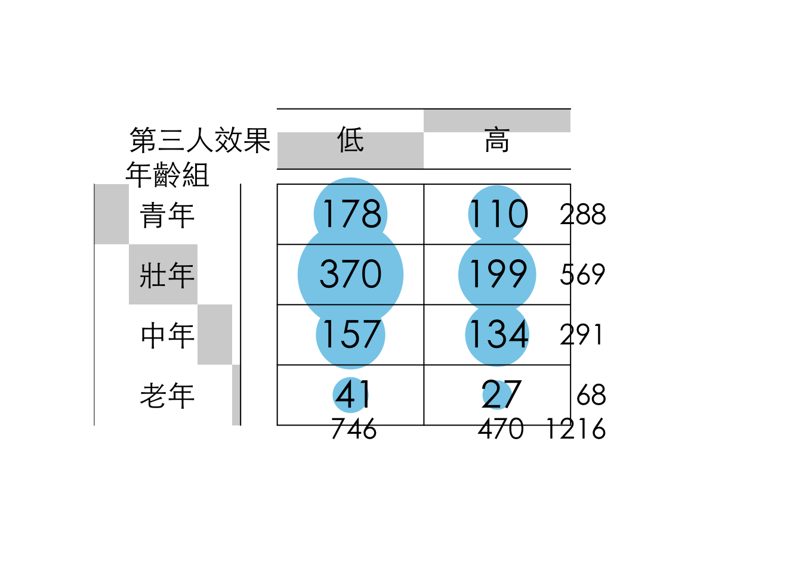
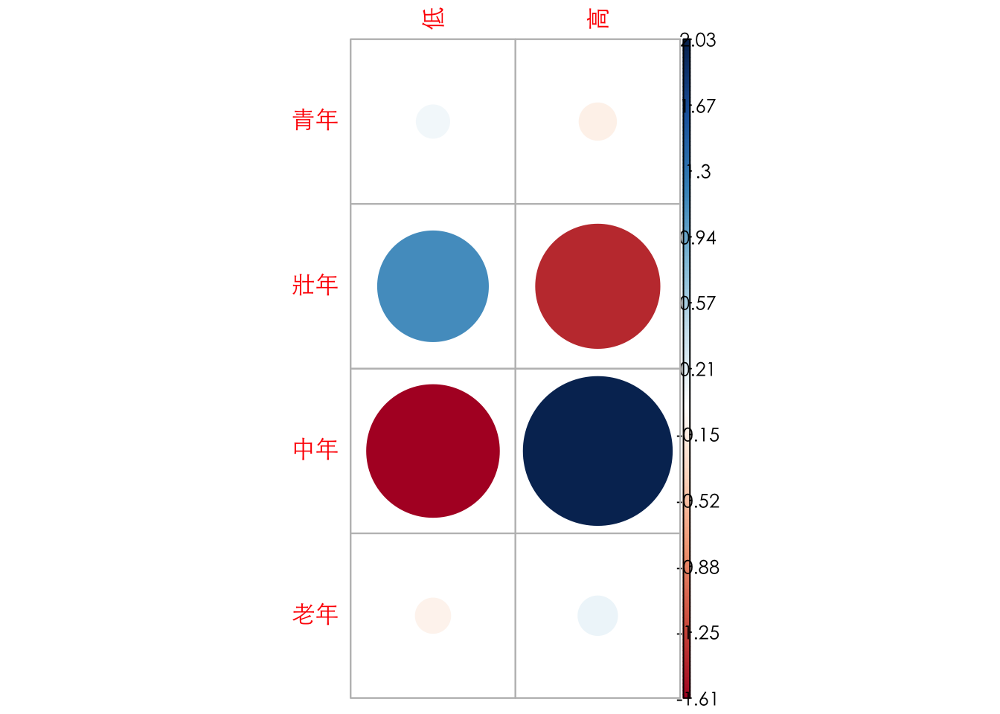
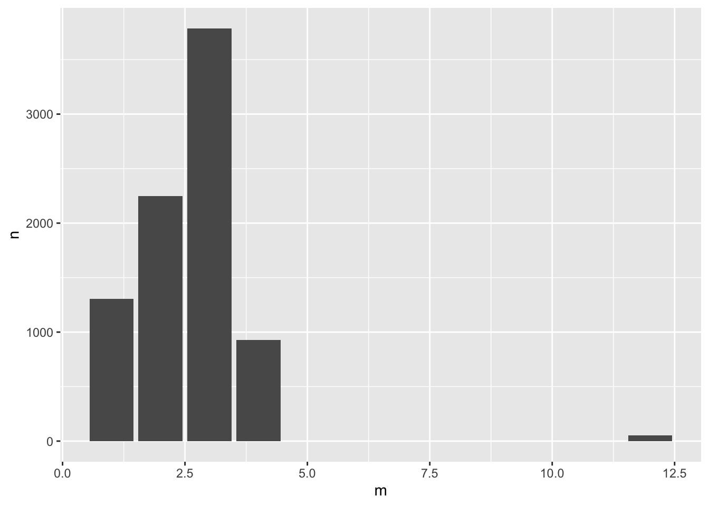

Chapter 8 Data Manipulation II
8.1 類別資料分析
這個範例涵括了在做問卷分析時常用的處理步驟。最核心的步驟是將文字陳述的類別資料轉換為便於後續運算的factor或數值資料。如果類別數量過多的時候，在這個過程會順便進行重新分組。例如依照年齡組把填答者分為老年、中壯年、青少年、兒童四組。
raw <- read_rds("data/tfc_survey.rds")8.1.1 清理資料
通常問卷會分為兩種類型的資料，一種是人口統計用的基本資料（如性別、年齡組、教育程度）、另一種是問卷本身要問的題項。以下是常見的問卷型態，包含把年齡從20歲開始每五年作為一組，70歲以上則歸類為一組，共會有十一組。而教育程度則常分為五至六組，但在問卷設計的時候，通常會需要增加「拒答」的選項。如果問卷中包含政黨意識形態，就必須要決定要以黨派作為類別變項，或者以意識形態做順序尺度。以下即為一個順序尺度的案例，從「非常接近泛綠」到「非常接近泛藍」共五個等第，但另增「拒答」選項。
dt <- raw %>%
mutate(QA3 = ordered(QA3, levels=c("20-24", "25-29", "30-34", "35-39",
"40-44", "45-49", "50-54", "55-59",
"60-64", "65-69", "70及以上"))) %>%
mutate(QA3_lv = ordered(QA3,
levels=c("20-24", "25-29", "30-34", "35-39",
"40-44", "45-49", "50-54", "55-59",
"60-64", "65-69", "70及以上"),
labels = c("青年", "青年", "壯年", "壯年",
"壯年", "中年", "中年", "中年",
"中年", "老年", "老年"))) %>%
mutate(QA4 = ordered(QA4,
levels=c("拒答", "國小及以下", "初中、國中",
"高中、高職", "大專（專科與大學）",
"研究所及以上"),
labels=c("拒答", "國小以下", "國中",
"高中職", "大專", "研究所以上"))) %>%
mutate(QASide=ordered(QASide,
exclude="拒答",
levels=c("非常接近泛綠", "接近泛綠",
"都不接近", "接近泛藍", "非常接近泛藍")))8.1.1.1 轉類別變項為factor
在一開始清理資料的時候，會建議先把類別變數（通常是文字型態）轉為factor型態。常用的函式是用mutate()搭配ordered()來改變變數型態。ordered()會照類別順序來標定該factor所對應到的數字。可以用as.integer()將factor轉為整數後就可以看到各類別的順序。
dt$QA3[1:10]## [1] 25-29 35-39 35-39 20-24 45-49 25-29 30-34 20-24 20-24 55-59
## 11 Levels: 20-24 < 25-29 < 30-34 < 35-39 < 40-44 < 45-49 < 50-54 < ... < 70及以上as.integer(dt$QA3[1:10])## [1] 2 4 4 1 6 2 3 1 1 88.1.1.2 排除某些類別值
如果有某些類別變數的值（如「拒答」）不想被編入factor，可以在reorder()中加入exclude的參數指定不想被編入類別值。
dt$QASide[1:10]## [1] 非常接近泛綠 接近泛藍 接近泛綠 接近泛綠 非常接近泛綠
## [6] 非常接近泛藍 接近泛綠 接近泛綠 接近泛藍 接近泛綠
## Levels: 非常接近泛綠 < 接近泛綠 < 都不接近 < 接近泛藍 < 非常接近泛藍as.integer(dt$QASide[1:10])## [1] 1 4 2 2 1 5 2 2 4 28.1.1.3 群組化類別值
如果有某些類別變數的類別過多，希望再次群組化為較少的組別，如重新群組各年齡層為青年、壯年、中年與老年四個尺度。此時除了levels參數外，可以另外加入labels的參數，指定每個類別變數值所要對應到的群組。以下為群組後的結果，仔細觀察剩下多少個尺度。
dt$QA3[1:10]## [1] 25-29 35-39 35-39 20-24 45-49 25-29 30-34 20-24 20-24 55-59
## 11 Levels: 20-24 < 25-29 < 30-34 < 35-39 < 40-44 < 45-49 < 50-54 < ... < 70及以上as.integer(dt$QA3[1:10])## [1] 2 4 4 1 6 2 3 1 1 8dt$QA3_lv[1:10]## [1] 青年 壯年 壯年 青年 中年 青年 壯年 青年 青年 中年
## Levels: 青年 < 壯年 < 中年 < 老年8.1.2 尺度轉類別指標
- Q7 請問您會不會受到假消息影響？
- Q8 請問您認為其他人會不會受到假消息的影響？
對於Q7、Q8的問題是詢問填答者認為自己或他人會不會受到假消息影響，並從「一點也不會」、「不會」、「會」到「絕對會」共分四個等第。Q7分別是「81, 446, 650, 39」、Q8分別是「5, 58, 803, 350」。相較於Q7，Q8的分佈略為左傾，亦即傾向於認為其他人較容易受影響。此時如果想要分析Q7和Q8間的關係，由於各有四個等第，其交叉分析表會有16個項目，相當難以分析。
dt2 <- dt %>%
mutate(Q7 = ordered(Q7, levels=c("一點也不會", "不會", "會", "絕對會"))) %>%
mutate(Q8 = ordered(Q8, levels=c("一點也不會", "不會", "會", "絕對會"))) %>%
mutate(Q7_3rd = as.numeric(Q8)-as.numeric(Q7)) %>%
mutate(Q7_3rd_lv = ifelse(Q7 %in% c("一點也不會", "不會") & Q8 %in% c("會", "絕對會"), "高", "低")) %>%
mutate(Q7_3rd_lv = ordered(Q7_3rd_lv, levels=c("低", "高")))這時候一種策略是把這兩題視為順序尺度變數，然後把兩題的分數相減。相減後的分數從「-1, 0, 1, 2, 3」各有「12, 482, 600, 103, 19」，不難猜到會是一個較為集中的分佈，後續僅能當作順序尺度或連續變項來分析，不適合找一個閾值轉類別變項。
另一種策略是，分別先把Q7與Q8的「一點也不會」和「不會」群組為「不會」、再把「會」與「絕對會」群組為「會」，這樣Q7與Q8的交叉分析表會變成2X2的分析表，雖然群組數量比較少，但別忘記Q7的填答結果集中在會與不會、而Q8為一個較為偏右的分佈，集中在「會」和「絕對會」。Q8勢必會造成比例不均的分組。
dt2 %>% count(as.integer(Q8)-as.integer(Q7))## # A tibble: 5 × 2
## `as.integer(Q8) - as.integer(Q7)` n
## <int> <int>
## 1 -1 12
## 2 0 482
## 3 1 600
## 4 2 103
## 5 3 19最後這題所採行的策略是，做高、低第三人效果分組，也就是根據認為自己「一點也不會」、「不會」受影響，而他人「會」或「絕對會」受影響的重新群組為「高第三人效果組」，其他則為「低第三人效果組」。亦即，分組的一句是在對自己與他人的認知上，無模糊空間的分組方法（也就是認為自己至少不會，和認為別人應該會）。
dt2 %>% count(Q7_3rd_lv)## # A tibble: 2 × 2
## Q7_3rd_lv n
## <ord> <int>
## 1 低 746
## 2 高 4708.1.3 Cross-tabulating
(xtb <- xtabs(~QA3_lv + Q7_3rd_lv, data=dt2))## Q7_3rd_lv
## QA3_lv 低 高
## 青年 178 110
## 壯年 370 199
## 中年 157 134
## 老年 41 27(chi2 <- chisq.test(xtb))##
## Pearson's Chi-squared test
##
## data: xtb
## X-squared = 10.017, df = 3, p-value = 0.01842vcd::assocstats(xtb)## X^2 df P(> X^2)
## Likelihood Ratio 9.9301 3 0.01917
## Pearson 10.0173 3 0.01842
##
## Phi-Coefficient : NA
## Contingency Coeff.: 0.09
## Cramer's V : 0.091print(round(chi2$observed, 2))## Q7_3rd_lv
## QA3_lv 低 高
## 青年 178 110
## 壯年 370 199
## 中年 157 134
## 老年 41 27print(round(chi2$expected, 2))## Q7_3rd_lv
## QA3_lv 低 高
## 青年 176.68 111.32
## 壯年 349.07 219.93
## 中年 178.52 112.48
## 老年 41.72 26.28print(round(chi2$residuals, 2))## Q7_3rd_lv
## QA3_lv 低 高
## 青年 0.10 -0.12
## 壯年 1.12 -1.41
## 中年 -1.61 2.03
## 老年 -0.11 0.14par(family="Heiti TC Light")
gplots::balloonplot(t(xtb), xlab="第三人效果", ylab="年齡組", main="",
dotsize=4/max(strwidth(40),strheight(40)),
text.size=1.5,label.size=2,
rowmar=1, colmar=1)
par(family="Heiti TC Light")
corrplot::corrplot(chi2$residuals, is.corr = F)
xtb %>% as_tibble() %>%
group_by(QA3_lv) %>%
mutate(fill = if_else(n == max(n), "orangered", "skyblue")) %>%
ungroup() %>%
mutate(QA3_lv = ordered(QA3_lv,
levels=c("青年", "壯年", "中年", "老年"))) %>%
arrange(desc(QA3_lv)) %>%
ggplot() + aes(y = QA3_lv, x=Q7_3rd_lv, color = fill, size = n) +
scale_size_area(max_size=70, guide = "none") +
geom_point(alpha=0.7) +
scale_color_manual(values = c("orangered", "skyblue"), guide = "none") +
geom_text(aes(
label=n,
vjust=1.3,
size=10
), color="black",) + theme_minimal() +
theme(text = element_text(family="Heiti TC Light"),
title = element_text(family="Heiti TC Light"))
8.2 時間軸的視覺化
library(tidyverse)
library(lubridate)
# options(stringsAsFactors = F) # default option in R > 4.08.2.1 文字轉時間
- Convert “character time” to R date.time object (POSIXct)
ptturl <- "https://github.com/P4CSS/R4CSSData/raw/main/ptt_hang_posts.csv"
raw <- read.csv(url(ptturl))
clean <- raw %>%
mutate(ptime = as.POSIXct(strptime(ptime, "%Y-%m-%dT%H:%M:%SZ", tz = "ASIA/Taipeiw")))
raw <- read_csv(url(ptturl))
?read_csvt <- "2019-04-12T00:48:19Z"
class(t)## [1] "character"?strptime
t1 <- strptime(t, "%Y-%m-%dT%H:%M:%SZ")
raw %>% glimpse()## Rows: 8,317
## Columns: 7
## $ plink <chr> "https://www.ptt.cc/bbs/HatePolitics/M.1555035677.A.24B.html"…
## $ board <chr> "HatePolitics", "HatePolitics", "HatePolitics", "HatePolitics…
## $ pcontent <chr> "\n\n韓國瑜赴哈佛大學前受訪表示，就是「keeping practice」，盡…
## $ poster <chr> "lovebxcx", "ikr3699654", "sunyeah", "rock720429", "btm978952…
## $ ptitle <chr> "Re: [新聞] 重申反對一國兩制 韓國瑜：看著我靈魂深", "Re: [討…
## $ ptime <dttm> 2019-04-12 02:21:14, 2019-04-12 02:13:45, 2019-04-12 02:10:1…
## $ ipaddr <chr> "83.221.204.163", "114.43.176.110", "118.163.130.181", "118.1…8.2.3 逐月統計資料
?lubridate
raw %>%
mutate(m = month(ptime)) %>%
count(m) %>%
ggplot() + aes(m, n) +
geom_col()
8.2.4 逐日統計資料（佳）
raw %>%
filter(ptime >= as_date("2019-03-18") & ptime < as_date("2019-04-01")) %>%
mutate(m = floor_date(ptime, unit = "day")) %>%
count(m) %>%
ggplot() + aes(m, n) +
geom_col()
8.2.5 每日逐時資料
clean %>%
filter(ptime >= as_datetime("2019-03-25") & ptime < as_datetime("2019-04-01")) %>%
mutate(d = floor_date(ptime, unit = "day")) %>%
mutate(h = hour(ptime)) %>%
count(d, h) %>%
mutate(wd = wday(d, label = F, locale = Sys.getlocale("LC_TIME"))) %>%
mutate(isweekend = ifelse(wd >= 6, "weekend", "weekday")) %>%
ggplot() + aes(h, n, color = as.character(d)) +
geom_line() +
facet_wrap(~isweekend)
?ifelse8.3 空值（NA）處理
許多統計資料都會有不同程度的NA（缺失值、遺漏值）。缺失值產生的原因不一，可能有以下原因：
- 資料運算的時候產生的填空值。例如
spread()和pivot_wider()經常會產生NA，也經常會指定值（例如0）來取代可能產生的NA。 - 資料紀錄的時候遺漏某些時間點的資料。
- 開放資料在開放時已經被整理成階層化、易於展示、一般人易懂的表格型態。此時，若將其讀入也會產生非常大量的
NA。例如本章節所要提到的政府各部會預算比例。 - 紀錄資料筆數非常龐大、來源眾多、紀錄時間不一時，雖然有很多紀錄，但這些紀錄必須要被對齊、刪減，才能夠獲得有意義的可計算資料。例如本章節會提到的世界各國疫苗注射資料。
8.3.1 表格重整：政府預算
raw <- readxl::read_excel("data/111B歲出政事別預算表.xls", skip=3, col_names = F)
raw %>% head(10)## # A tibble: 10 × 9
## ...1 ...2 ...3 ...4 ...5 ...6 ...7 ...8 ...9
## <chr> <chr> <chr> <chr> <chr> <chr> <chr> <chr> <chr>
## 1 科 … <NA> <NA> <NA> <NA> 本年… 上年… 前年… "本…
## 2 款 項 目 節 "名 … <NA> <NA> <NA> <NA>
## 3 <NA> <NA> <NA> <NA> "\n… 2262… 2135… 2039… "126…
## 4 <NA> <NA> <NA> <NA> "\n(… 2101… 2026… 1907… "750…
## 5 1 <NA> <NA> <NA> "310… 1210… 1186… 1176… "233…
## 6 <NA> 1 <NA> <NA> "310… 1004… 9789… 9973… "258…
## 7 <NA> <NA> 1 <NA> "310… 9205… 8963… 8821… "241…
## 8 <NA> <NA> 2 <NA> "310… 30000 30000 2999… "-"
## 9 <NA> <NA> 3 <NA> "310… 15760 15760 4557… "-"
## 10 <NA> <NA> 4 <NA> "310… 5332 5332 6720… "-"8.3.1.1 基本清理
- 重新命名欄位名稱
- 刪去被當成表格標題的多於列（通常是前兩三列）
slice(-(1:2))。 - 觀察資料，「款」可以說是支出大類的代號，例如總統府、行政支出、立法支出、軍事支出、教育支出等。「科」為該單位底下的部門或者項目，例如「行政支出」下有行政院、主計總處支出等。更底下的細類「目」並非本例的分析對象，所以可以刪除。所以，如果款、科均為空值的話，代表其為更細的「目」。因此篩去款科為空值的所有項目。
filter(!is.na(款) | !is.na(科)) - 將機構id和機構名稱切分開來，視覺化的時候只會用到機構名稱。
separate(機構, c("oid", "org"), sep="\n")
names(raw) <- c("款", "科", "目", "節", "機構", "本年度預算", "上年度預算", "上年度決算", "預算差")
cleaned <- raw %>%
slice(-(1:2)) %>%
filter(!is.na(款) | !is.na(科)) %>%
select(-目, -節) %>%
separate(機構, c("oid", "org"), sep="\n")
cleaned %>% head(10)## # A tibble: 10 × 8
## 款 科 oid org 本年度預算 上年度預算 上年度…¹ 預算差
## <chr> <chr> <chr> <chr> <chr> <chr> <chr> <chr>
## 1 1 <NA> 3100000000 國務支出 1210301 1186955 1176955… 23346
## 2 <NA> 1 3102010000 總統府 1004797 978916 997305.… 25881
## 3 <NA> 2 3102100000 國家安全會議 205504 208039 179649.… -2535
## 4 2 <NA> 3200000000 行政支出 6134276 5836481 5477154… 297795
## 5 <NA> 1 3203010000 行政院 1256043 1286646 1268295… -30603
## 6 <NA> 2 3203100000 主計總處 1604967 1478173 1578781… 126794
## 7 <NA> 3 3203300000 人事行政總處 555363 573447 489516.… -18084
## 8 <NA> 4 3203340000 公務人力發展學院 244346 239453 229852.… 4893
## 9 <NA> 5 3203420000 檔案管理局 787429 646081 443133.… 141348
## 10 <NA> 6 3203900000 大陸委員會 900896 900866 792491.… 30
## # … with abbreviated variable name ¹上年度決算8.3.1.2 NA處理
觀察一下現在的資料，發現，行政院、主計總處等均屬於行政支出，但行政支出卻自有一列。依照長表格的格式來說，應嘗試把「款」作為機構的變項。所以將款的數字取代為「行政支出」等支出類別的名稱。
cleaned %>% mutate(款 = ifelse(!is.na(款), org, 款)) %>%
head(10)## # A tibble: 10 × 8
## 款 科 oid org 本年度預算 上年度…¹ 上年…² 預算差
## <chr> <chr> <chr> <chr> <chr> <chr> <chr> <chr>
## 1 國務支出 <NA> 3100000000 國務支出 1210301 1186955 117695… 23346
## 2 <NA> 1 3102010000 總統府 1004797 978916 997305… 25881
## 3 <NA> 2 3102100000 國家安全會議 205504 208039 179649… -2535
## 4 行政支出 <NA> 3200000000 行政支出 6134276 5836481 547715… 297795
## 5 <NA> 1 3203010000 行政院 1256043 1286646 126829… -30603
## 6 <NA> 2 3203100000 主計總處 1604967 1478173 157878… 126794
## 7 <NA> 3 3203300000 人事行政總處 555363 573447 489516… -18084
## 8 <NA> 4 3203340000 公務人力發展學院 244346 239453 229852… 4893
## 9 <NA> 5 3203420000 檔案管理局 787429 646081 443133… 141348
## 10 <NA> 6 3203900000 大陸委員會 900896 900866 792491… 30
## # … with abbreviated variable names ¹上年度預算, ²上年度決算接下來，希望能夠在「款==NA」的地方填入該欄的「前一個值」例如行政支出。查詢一下（關鍵字如「Fill in NA column values with the last value that was not NA」）還真的有這樣的函式可以操作。
library(zoo)
cleaned %>%
mutate(款 = ifelse(!is.na(款), org, 款)) %>%
mutate(款 = zoo::na.locf(款)) %>%
head(10)## # A tibble: 10 × 8
## 款 科 oid org 本年度預算 上年度…¹ 上年…² 預算差
## <chr> <chr> <chr> <chr> <chr> <chr> <chr> <chr>
## 1 國務支出 <NA> 3100000000 國務支出 1210301 1186955 117695… 23346
## 2 國務支出 1 3102010000 總統府 1004797 978916 997305… 25881
## 3 國務支出 2 3102100000 國家安全會議 205504 208039 179649… -2535
## 4 行政支出 <NA> 3200000000 行政支出 6134276 5836481 547715… 297795
## 5 行政支出 1 3203010000 行政院 1256043 1286646 126829… -30603
## 6 行政支出 2 3203100000 主計總處 1604967 1478173 157878… 126794
## 7 行政支出 3 3203300000 人事行政總處 555363 573447 489516… -18084
## 8 行政支出 4 3203340000 公務人力發展學院 244346 239453 229852… 4893
## 9 行政支出 5 3203420000 檔案管理局 787429 646081 443133… 141348
## 10 行政支出 6 3203900000 大陸委員會 900896 900866 792491… 30
## # … with abbreviated variable names ¹上年度預算, ²上年度決算太神奇了！看見沒！接下來只要把「科 is NA」的那些該大類支出總數的紀錄給刪除，資料就乾淨了。最後就只會剩下一些資料清理的功伕。完整程式碼可以看下一節。
8.3.1.3 完整程式碼
library(zoo)
# raw <- readxl::read_excel("data/111B歲出政事別預算總表.xls")
raw <- readxl::read_excel("data/111B歲出政事別預算表.xls", skip=3, col_names = F)
names(raw) <- c("款", "科", "目", "節", "機構", "本年度預算", "上年度預算", "上年度決算", "預算差")
# raw$款 <- na.locf(raw$款)
cleaned <- raw %>%
filter(!is.na(款) | !is.na(科)) %>%
slice(-(1:2)) %>%
select(-目, -節) %>%
separate(機構, c("oid", "org"), sep="\n") %>%
mutate(款 = ifelse(!is.na(款), org, 款)) %>%
mutate(款 = zoo::na.locf(款)) %>%
filter(!is.na(科)) %>%
select(-科) %>% type_convert() %>%
mutate(上年度預算 = as.numeric(上年度預算),
上年度決算 = as.integer(上年度決算),
預算差 = as.numeric(預算差)) %>%
replace_na(list(上年度預算 = 0, 上年度決算 = 0)) %>%
mutate(預算差 = 本年度預算 - 上年度預算)8.3.2 對齊資料。世界各國疫苗接種比例
https://ourworldindata.org/covid-vaccinations - https://github.com/owid/covid-19-data/tree/master/public/data/vaccinations
評估資料概況後可發現這個資料集每一列就是某一個國家某一天所上傳的紀錄。所以，一個國家會有很多列。乍聽之下不難處理，但事實上每個國家不會每天上傳、也不會固定某一天上傳、哪一週、哪一個月開始上傳也不一定，也有可能會漏掉一些月份或週次。所以，制定出一個時間單位（例如週、月）、然後延著時間軸將資料「對齊」，讓每個國家在每個時間單位都有資料。但每個國家疫情發展程度不一，所以也不可能有一個完美的對齊，所以通常會建議就所要觀察的國家進行對齊即可。至於想刪除的那些資料列，幾乎都可以當成是所謂的缺失值。
raw <- read_csv("data/vaccinations.csv")
dim(raw)## [1] 99442 16raw %>% head(20)## # A tibble: 20 × 16
## location iso_c…¹ date total…² peopl…³ peopl…⁴ total…⁵ daily…⁶ daily…⁷
## <chr> <chr> <date> <dbl> <dbl> <dbl> <dbl> <dbl> <dbl>
## 1 Afghanist… AFG 2021-02-22 0 0 NA NA NA NA
## 2 Afghanist… AFG 2021-02-23 NA NA NA NA NA 1367
## 3 Afghanist… AFG 2021-02-24 NA NA NA NA NA 1367
## 4 Afghanist… AFG 2021-02-25 NA NA NA NA NA 1367
## 5 Afghanist… AFG 2021-02-26 NA NA NA NA NA 1367
## 6 Afghanist… AFG 2021-02-27 NA NA NA NA NA 1367
## 7 Afghanist… AFG 2021-02-28 8200 8200 NA NA NA 1367
## 8 Afghanist… AFG 2021-03-01 NA NA NA NA NA 1580
## 9 Afghanist… AFG 2021-03-02 NA NA NA NA NA 1794
## 10 Afghanist… AFG 2021-03-03 NA NA NA NA NA 2008
## 11 Afghanist… AFG 2021-03-04 NA NA NA NA NA 2221
## 12 Afghanist… AFG 2021-03-05 NA NA NA NA NA 2435
## 13 Afghanist… AFG 2021-03-06 NA NA NA NA NA 2649
## 14 Afghanist… AFG 2021-03-07 NA NA NA NA NA 2862
## 15 Afghanist… AFG 2021-03-08 NA NA NA NA NA 2862
## 16 Afghanist… AFG 2021-03-09 NA NA NA NA NA 2862
## 17 Afghanist… AFG 2021-03-10 NA NA NA NA NA 2862
## 18 Afghanist… AFG 2021-03-11 NA NA NA NA NA 2862
## 19 Afghanist… AFG 2021-03-12 NA NA NA NA NA 2862
## 20 Afghanist… AFG 2021-03-13 NA NA NA NA NA 2862
## # … with 7 more variables: total_vaccinations_per_hundred <dbl>,
## # people_vaccinated_per_hundred <dbl>,
## # people_fully_vaccinated_per_hundred <dbl>,
## # total_boosters_per_hundred <dbl>, daily_vaccinations_per_million <dbl>,
## # daily_people_vaccinated <dbl>, daily_people_vaccinated_per_hundred <dbl>,
## # and abbreviated variable names ¹iso_code, ²total_vaccinations,
## # ³people_vaccinated, ⁴people_fully_vaccinated, ⁵total_boosters, …8.3.2.1 按月對齊資料
首先要挑選要拿來做視覺化的資料欄位。這邊所選擇的是people_fully_vaccinated_per_hundred，也就是每百人接種二劑疫苗的人數，相當於接種二劑疫苗的百分比。
接下來便是空值處理，如果這個欄位沒有數值的就直接用drop_na()篩除即可。
這個範例希望把該資料視覺化為Y軸為年、X軸為時間的熱區圖。但整個疫情資料橫亙二年多，如果以週為彙整單位的話，那勢必X軸會有近百個資料點。所以打算以「月」為單位來彙整這些資料，因為且資料中也有不少國家缺數週的資料，所以以月為彙整單位是一個權衡後的選擇（仍可以嘗試用週作為彙整單位試試看）。所以，運用了lubridate::floor_date()來將日期資料轉換為月，例如2022-03-12和2022-03-14都會被轉換為2022-03-01。
依照國家與時間群組彙整資料。接下來就依照各國的月份來做彙整（注意，此時會有不少資料同屬於某個月的資料）。彙整的方法是，經過對「日期」（不是對月）做排序後，僅留下第一筆資料，也就是僅留下最接近月份開頭的資料。經由這樣的操作，會使得各國在每個月剛好留下一筆資料，如下面程式的範例輸出。
library(lubridate)
fullvaccinated <- raw %>% select(country = location, date,
people_fully_vaccinated_per_hundred) %>%
drop_na(people_fully_vaccinated_per_hundred) %>%
mutate(m = floor_date(date, unit = "month")) %>%
group_by(country, m) %>%
arrange(date) %>%
slice(1) %>%
ungroup() %>%
select(-date)
fullvaccinated %>% head(10)## # A tibble: 10 × 3
## country people_fully_vaccinated_per_hundred m
## <chr> <dbl> <date>
## 1 Afghanistan 0.14 2021-05-01
## 2 Afghanistan 0.36 2021-06-01
## 3 Afghanistan 0.48 2021-07-01
## 4 Afghanistan 1.08 2021-08-01
## 5 Afghanistan 8 2021-11-01
## 6 Afghanistan 9.42 2021-12-01
## 7 Afghanistan 9.56 2022-01-01
## 8 Afghanistan 9.82 2022-02-01
## 9 Afghanistan 10.8 2022-03-01
## 10 Afghanistan 11.4 2022-04-018.3.2.2 處理遺漏資料的月份
接下來要處理的是資料紀錄的缺漏值。每個國家登錄資料的時間是很不一致的，某些國家會缺某些月份，或者某些國家是在某年某月以後才開始登記，或者最近沒在登記。但這個範例所要視覺化的資料是接種疫苗的比例，所以即使是現在沒在登記了，但接種比例應列計最後一次資料紀錄的接種比例。
首先我要讓每個國家都有所有月份，這裡應會有某個函式可以做到這件事，但我沒查到這個函式。不過我可以很技巧性地用pivot_wider()（spread()）和pivot_longer()（gather()）來完成這件事。spread()在展開時對於缺少的資料項可以自動補NA。所以我就只要把資料的月份展開後再gather()回來後，就可以自動讓每個國家所擁有的月份資料一致。以下為spread()後的結果，可以觀察到每一列是一個國家，每一欄是個月份，如果當月都沒資料紀錄，那該月的值就會是空值。可以看見空值是相當多的，也就是在那段時間都沒有資料紀錄。
fullvaccinated %>%
spread(m, people_fully_vaccinated_per_hundred, fill=NA) %>%
head(10)## # A tibble: 10 × 19
## country 2020-…¹ 2021-…² 2021-…³ 2021-…⁴ 2021-…⁵ 2021-…⁶ 2021-…⁷ 2021-…⁸
## <chr> <dbl> <dbl> <dbl> <dbl> <dbl> <dbl> <dbl> <dbl>
## 1 Afghanistan NA NA NA NA NA 0.14 0.36 0.48
## 2 Africa NA NA 0 0.02 0.3 0.36 0.63 1.15
## 3 Albania NA NA 0 NA NA 6.32 10.2 14.2
## 4 Algeria NA NA NA NA NA NA NA NA
## 5 Andorra NA NA NA 1.52 5.8 6.07 14.1 34.9
## 6 Angola NA NA NA NA NA 0.12 1.11 1.66
## 7 Anguilla NA NA NA NA 5.18 29.2 36.4 47.3
## 8 Antigua and … NA NA NA NA NA 2.61 18.4 28.2
## 9 Argentina 0 0 0.26 0.69 1.56 2.24 6.68 9.71
## 10 Armenia NA NA NA NA NA NA 0.4 1.03
## # … with 10 more variables: `2021-08-01` <dbl>, `2021-09-01` <dbl>,
## # `2021-10-01` <dbl>, `2021-11-01` <dbl>, `2021-12-01` <dbl>,
## # `2022-01-01` <dbl>, `2022-02-01` <dbl>, `2022-03-01` <dbl>,
## # `2022-04-01` <dbl>, `2022-05-01` <dbl>, and abbreviated variable names
## # ¹`2020-12-01`, ²`2021-01-01`, ³`2021-02-01`, ⁴`2021-03-01`, ⁵`2021-04-01`,
## # ⁶`2021-05-01`, ⁷`2021-06-01`, ⁸`2021-07-01`在以下的範例輸出可以看到gather()後的結果。注意，需要照國家和月份來排序後才便於觀察。
fullvaccinated %>%
spread(m, people_fully_vaccinated_per_hundred, fill=NA) %>%
gather(month, perc, -country) %>%
arrange(country, month) %>% head(20)## # A tibble: 20 × 3
## country month perc
## <chr> <chr> <dbl>
## 1 Afghanistan 2020-12-01 NA
## 2 Afghanistan 2021-01-01 NA
## 3 Afghanistan 2021-02-01 NA
## 4 Afghanistan 2021-03-01 NA
## 5 Afghanistan 2021-04-01 NA
## 6 Afghanistan 2021-05-01 0.14
## 7 Afghanistan 2021-06-01 0.36
## 8 Afghanistan 2021-07-01 0.48
## 9 Afghanistan 2021-08-01 1.08
## 10 Afghanistan 2021-09-01 NA
## 11 Afghanistan 2021-10-01 NA
## 12 Afghanistan 2021-11-01 8
## 13 Afghanistan 2021-12-01 9.42
## 14 Afghanistan 2022-01-01 9.56
## 15 Afghanistan 2022-02-01 9.82
## 16 Afghanistan 2022-03-01 10.8
## 17 Afghanistan 2022-04-01 11.4
## 18 Afghanistan 2022-05-01 NA
## 19 Africa 2020-12-01 NA
## 20 Africa 2021-01-01 NA接下來是最技巧性的部分。就接種比例而言是個遞增數列，所以如果這個月有紀錄，但下個月沒紀錄（NA），那下個月的資料應以這個月的資料來替代。此時可以用zoo套件的na.locf()來填NA值，其填NA值的規則是用最後一筆非NA值的資料來替代NA值。但要注意的是，因為資料紀錄可能到第六個月或第七個月才開始紀錄，但在前面的月份都沒資料紀錄，也就是說那些NA值沒有更早的資料紀錄權充填充值。原本na.locf()會把這些找不到參考對象的NA值直接刪除，但我們可以在裡面加一個參數使其不會被刪除（na.locf(perc, na.rm = F)）。
最後，就把這些沒被刪除也沒得參考的早期資料項，用replace_na()填上0即可。
fullvaccinated %>%
spread(m, people_fully_vaccinated_per_hundred, fill=NA) %>%
gather(month, perc, -country) %>%
arrange(country, month) %>%
group_by(country) %>%
arrange(month) %>%
mutate(perc = zoo::na.locf(perc, na.rm = F)) %>%
ungroup() %>%
arrange(country, month) %>% head(10)## # A tibble: 10 × 3
## country month perc
## <chr> <chr> <dbl>
## 1 Afghanistan 2020-12-01 NA
## 2 Afghanistan 2021-01-01 NA
## 3 Afghanistan 2021-02-01 NA
## 4 Afghanistan 2021-03-01 NA
## 5 Afghanistan 2021-04-01 NA
## 6 Afghanistan 2021-05-01 0.14
## 7 Afghanistan 2021-06-01 0.36
## 8 Afghanistan 2021-07-01 0.48
## 9 Afghanistan 2021-08-01 1.08
## 10 Afghanistan 2021-09-01 1.08最後，就把這些沒被刪除也沒得參考的早期資料項，用replace_na()填上0即可。大功告成。
fullvaccinated %>%
spread(m, people_fully_vaccinated_per_hundred, fill=NA) %>%
gather(month, perc, -country) %>%
arrange(country, month) %>%
group_by(country) %>%
arrange(month) %>%
mutate(perc = zoo::na.locf(perc, na.rm = F)) %>%
ungroup() %>%
arrange(country, month) %>%
replace_na(list(perc=0)) %>%
arrange(country, month) %>% head(10)## # A tibble: 10 × 3
## country month perc
## <chr> <chr> <dbl>
## 1 Afghanistan 2020-12-01 0
## 2 Afghanistan 2021-01-01 0
## 3 Afghanistan 2021-02-01 0
## 4 Afghanistan 2021-03-01 0
## 5 Afghanistan 2021-04-01 0
## 6 Afghanistan 2021-05-01 0.14
## 7 Afghanistan 2021-06-01 0.36
## 8 Afghanistan 2021-07-01 0.48
## 9 Afghanistan 2021-08-01 1.08
## 10 Afghanistan 2021-09-01 1.088.3.2.3 完整程式碼
library(lubridate)
raw <- read_csv("data/vaccinations.csv")
fullvaccinated <- raw %>% select(country = location, date,
people_fully_vaccinated_per_hundred) %>%
drop_na(people_fully_vaccinated_per_hundred) %>%
mutate(m = floor_date(date, unit = "month")) %>%
group_by(country, m) %>%
arrange(date) %>%
slice(1) %>%
ungroup() %>%
select(-date)
vperc_by_month <- fullvaccinated %>%
spread(m, people_fully_vaccinated_per_hundred, fill=NA) %>%
gather(month, perc, -country) %>%
arrange(country, month) %>%
group_by(country) %>%
arrange(month) %>%
mutate(perc = zoo::na.locf(perc, na.rm = F)) %>%
ungroup() %>%
arrange(country, month) %>%
replace_na(list(perc=0))